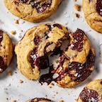

Here is the recipe for chocolate chip cookies from Sally's Baking:
Ingridents:
2 and 1/4 cups (281g) all-purpose flour (spooned & leveled)
1 teaspoon baking soda
1 and 1/2 teaspoons cornstarch*
/2 teaspoon salt
3/4 cup (170g/12 Tbsp) unsalted butter, melted & cooled for 5 minutes
3/4 cup (150g) packed light or dark brown sugar
1/2 cup (100g) granulated sugar
1 large egg + 1 egg yolk, at room temperature
2 teaspoons pure vanilla extract
1 and 1/4 cups (225g) semi-sweet chocolate chips or chocolate chunks
Here is the recipe:
1. In a large bowl, whisk the flour, baking soda, cornstarch, and salt together. Set aside.
2. In a medium bowl, whisk the melted butter, brown sugar, and granulated sugar together until no lumps remain. Whisk in the egg and egg yolk until combined, then whisk in the vanilla extract. The mixture will be thin. Pour into dry ingredients and mix together with a large spoon or spatula. The dough will be very soft, thick, and shiny. Fold in the chocolate chips. The chocolate chips may not stick to the dough because of the melted butter, but do your best to combine them.
3. Cover the dough tightly and refrigerate for at least 2 hours or up to 3 days. I highly recommend chilling the cookie dough overnight to prevent overspreading.
4. Preheat oven to 325°F (163°C). Line large baking sheets with parchment paper or silicone baking mats. If the dough has chilled for longer than 2 hours, let it sit at room temperature for about 15 minutes.
5. Using a cookie scoop or Tablespoon measuring spoon, scoop the chilled cookie dough, about 3 scant Tablespoons (about 2 ounces, or 60g) of dough for XL cookies or 2 heaping Tablespoons (about 1.75 ounces, or 50g) of dough for medium-large cookies. Roll into a ball, then use your fingers to shape the cookie dough so that it’s taller rather than wide—almost like a cylinder. This helps the cookies bake up thicker. Repeat with remaining dough. Arrange the cookies 3 inches apart on the prepared baking sheets.
6. Bake the cookies for 13–14 minutes or until the edges are very lightly browned. The centers will look very soft, but the cookies will continue to set as they cool. Cool on the baking sheet for 10 minutes before transferring to a cooling rack to cool completely. While the cookies are still warm, I like to press a few more chocolate chips into the tops—this is optional and only for looks!
7. Store tightly covered at room temperature for up to 1 week.